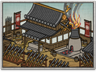

Requires
- Buildings:

- Arts:

Enables
- Buildings: 
- Units:


Basic Building Statistics (can be modified by difficulty level, arts, skills, traits and retainers)
- Cost: 2450
Description
"...Power comes from the barrel of the gun."
This building allows the recruitment of matchlock-armed samurai units. By breaking the reliance on European guns, a lord can add considerably to his war-making potential. Given a suitable place to work, a Japanese gunsmith can be every bit as clever, cunning and productive as a gaijin on the other side of the world! Once Japanese weapon smiths had seen European firearms and understood what they were about, it did not take long for local examples to be manufactured. Indeed, Japanese craftsmanship quickly improved on the imported examples of matchlocks, making them more practical battlefield weapons: Japanese gunsmiths added a foresight to guns years before Europeans thought of doing the same thing. Later they also invented a way of shielding the burning match from the rain. Needless to say, the locally made guns often displayed high quality workmanship and materials, and those guns intended for samurai users were well made and beautifully finished. The brown colour of many gun barrels was not the metal going rusty but a finish that would resist corrosion.